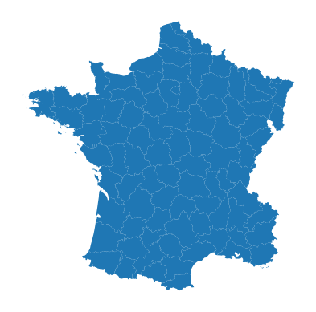
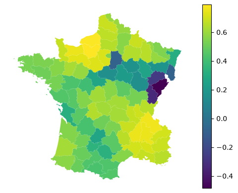
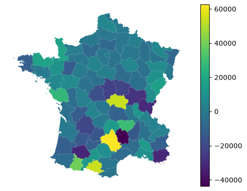
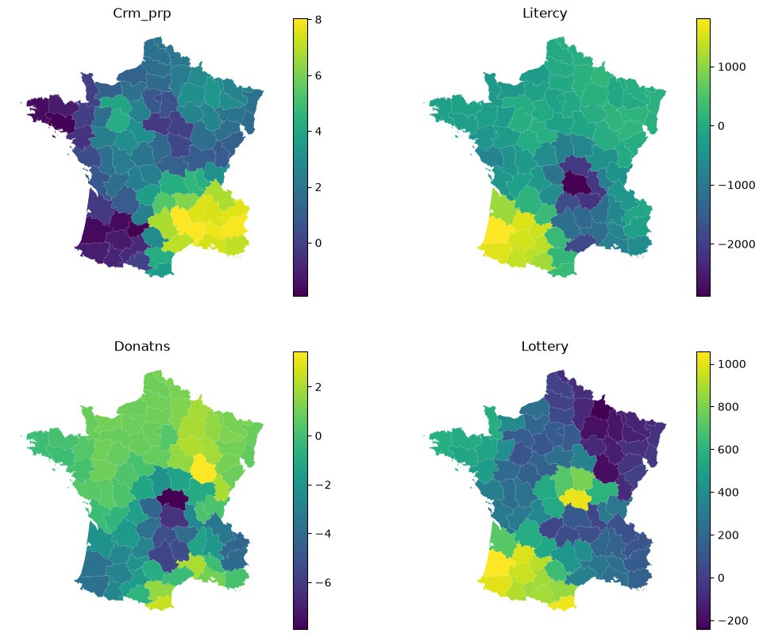
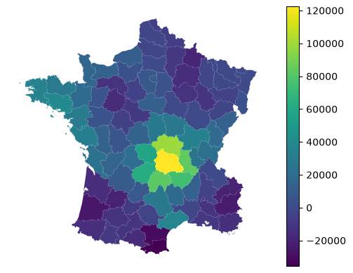
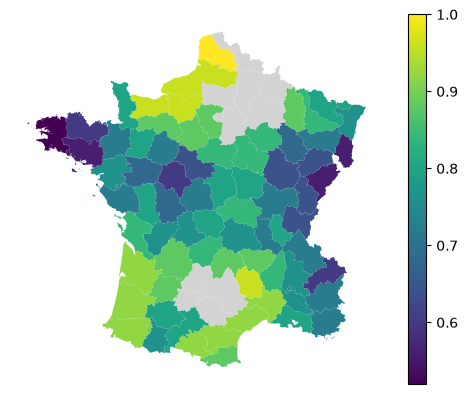
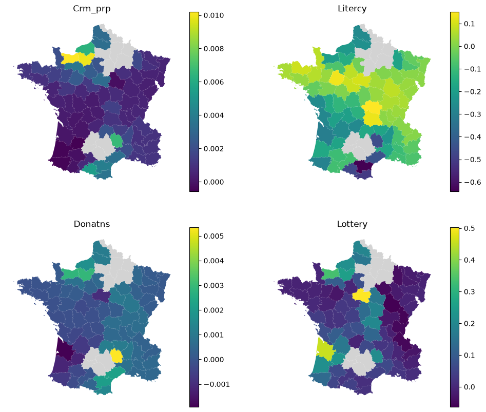

Linear models¶
An overview of linear and logistic regression models.
import geopandas as gpd
import matplotlib.pyplot as plt
from geodatasets import get_path
from sklearn import metrics
from spml.linear_model import GWLinearRegression, GWLogisticRegression
Linear regression¶
Linear regression is a classical example of geographically weighted regression models. In this example, you can predict the number of suicides based on other population data in the Guerry dataset.
gdf = gpd.read_file(get_path("geoda.guerry"))
It is a relatively small dataset covering Frech data from 1800s.
gdf.plot().set_axis_off()

Specify the model and fit the data.
adaptive = GWLinearRegression(bandwidth=25, fixed=False, kernel="tricube")
adaptive.fit(
gdf[["Crm_prp", "Litercy", "Donatns", "Lottery"]],
gdf["Suicids"],
geometry=gdf.representative_point(),
)
GWLinearRegression(bandwidth=25, kernel='tricube')In a Jupyter environment, please rerun this cell to show the HTML representation or trust the notebook.
On GitHub, the HTML representation is unable to render, please try loading this page with nbviewer.org.
Parameters
| bandwidth | 25 | |
| kernel | 'tricube' | |
| fixed | False | |
| include_focal | True | |
| graph | None | |
| n_jobs | -1 | |
| fit_global_model | True | |
| strict | False | |
| keep_models | False | |
| temp_folder | None | |
| batch_size | None | |
| coplanar | 'raise' | |
| verbose | False |
Fitted attributes
| Name | Type | Value |
|---|---|---|
| RSS_ | Series[float64](85,) | focal 0 3...dtype: float64 |
| TSS_ | Series[float64](85,) | 0 1.07151...dtype: float64 |
| aic_ | float64 | 1964 |
| aicc_ | float64 | 2009 |
| bic_ | float64 | 2046 |
| effective_df_ | float64 | 32.29 |
| feature_names_in_ | ndarray[object](4,) | ['Crm_prp','Litercy','Donatns','Lottery'] |
| hat_values_ | Series[float64](85,) | 0 0.61251...dtype: float64 |
| local_coef_ | DataFrame | Crm_prp ...s x 4 columns] |
| local_intercept_ | Series[float64](85,) | 0 22084.7...dtype: float64 |
| local_r2_ | Series[float64](85,) | 0 0.65527...dtype: float64 |
| log_likelihood_ | float64 | -948.9 |
| pred_ | Series[float64](85,) | 0 65929.2...dtype: float64 |
| resid_ | Series[float64](85,) | 0 -30890.2...dtype: float64 |
| y_bar_ | Series[float64](85,) | 0 44254.6...dtype: float64 |
You can get a number of outputs from the fitted model. For example, focal predictions (a value is predicted on an observations using the local model fitted around it).
adaptive.pred_
0 65929.297258
1 14289.540382
2 60668.901578
3 25191.170857
4 12777.621045
...
80 41304.669559
81 19766.026593
82 29125.591134
83 25717.441407
84 19381.885833
Length: 85, dtype: float64
This allows you to measure model performance metrics like $R^2$. This value would be comparable to the R2 reported by mgwr.
metrics.r2_score(gdf["Suicids"], adaptive.pred_)
0.7030520942210732
Local version of $R^2$ is accessible directly.
adaptive.local_r2_
0 0.655274
1 0.564506
2 0.616975
3 0.690529
4 0.704666
...
80 0.444105
81 0.554521
82 0.646275
83 0.174557
84 0.215379
Length: 85, dtype: float64
Any of the values linked to individual observations can then be mapped.
gdf.plot(adaptive.local_r2_, legend=True).set_axis_off()

Similarly, you can access residuals.
gdf.plot(adaptive.resid_, legend=True).set_axis_off()

Each local model then have its own local coefficients.
adaptive.local_coef_
| Crm_prp | Litercy | Donatns | Lottery | |
|---|---|---|---|---|
| 0 | 3.147001 | -500.570435 | 0.218349 | 274.308624 |
| 1 | 2.177315 | 103.815973 | 1.276062 | -94.396645 |
| 2 | 1.155884 | -2112.020365 | -7.912018 | 1015.701421 |
| 3 | 7.945416 | -189.098606 | -3.969571 | 132.812885 |
| 4 | 7.575983 | -111.394715 | -4.221681 | 107.181855 |
| ... | ... | ... | ... | ... |
| 80 | 0.422307 | -769.135891 | 0.472364 | 315.564934 |
| 81 | 2.228270 | -343.158854 | 0.233416 | 242.722924 |
| 82 | 2.319692 | -390.456757 | -1.543721 | 356.856559 |
| 83 | 1.918249 | 147.505689 | 1.016886 | -58.835632 |
| 84 | 0.027807 | -92.139088 | 1.604362 | 331.684347 |
85 rows × 4 columns
Again, this can be explored visually.
f, axs = plt.subplots(2, 2, figsize=(12, 10))
for column, ax in zip(adaptive.local_coef_.columns, axs.flat, strict=False):
gdf.plot(adaptive.local_coef_[column], legend=True, ax=ax)
ax.set_title(column)
ax.set_axis_off()

Alongside local coefficients, you can retireve a local intercept value.
gdf.plot(adaptive.local_intercept_, legend=True).set_axis_off()

For details on prediction, see the Prediction guide.
Logistic regression¶
Due to the nature of the principle in which spatial ML extends scikit-learn, you can also fit the local version of logistic regression for classification tasks. However, there’s a caveat. Given it is unlikely that all categories are present in all local models, fitting a non-binary would lead to inconsistent local models. Hence SpML currently supports only binary regression, akin to binomial model in mgwr.
Let’s illustrate it by prediciting whether the number of suicides is over or under median.
y = gdf["Suicids"] > gdf["Suicids"].median()
The API then looks the same, following scikit-learn’s model.
binary = GWLogisticRegression(bandwidth=25, fixed=False, max_iter=500)
binary.fit(
gdf[["Crm_prp", "Litercy", "Donatns", "Lottery"]],
y,
geometry=gdf.representative_point(),
)
GWLogisticRegression(bandwidth=25)In a Jupyter environment, please rerun this cell to show the HTML representation or trust the notebook.
On GitHub, the HTML representation is unable to render, please try loading this page with nbviewer.org.
Parameters
| bandwidth | 25 | |
| fixed | False | |
| kernel | 'bisquare' | |
| include_focal | True | |
| graph | None | |
| n_jobs | -1 | |
| fit_global_model | True | |
| strict | False | |
| keep_models | False | |
| temp_folder | None | |
| batch_size | None | |
| min_proportion | 0.2 | |
| undersample | False | |
| leave_out | None | |
| random_state | None | |
| coplanar | 'raise' | |
| verbose | False |
Fitted attributes
| Name | Type | Value |
|---|---|---|
| aic_ | float64 | 86.8 |
| aicc_ | float64 | 134.4 |
| bic_ | float64 | 158.4 |
| effective_df_ | float64 | 30.08 |
| feature_names_in_ | ndarray[object](4,) | ['Crm_prp','Litercy','Donatns','Lottery'] |
| hat_values_ | Series[float64](85,) | 0 0.62499...dtype: float64 |
| local_class_support_ | Series[int64](85,) | 0 2 1 ..., dtype: int64 |
| local_coef_ | DataFrame | Crm_prp ...s x 4 columns] |
| local_intercept_ | Series[float64](85,) | 0 -6.7327...dtype: float64 |
| log_likelihood_ | float64 | -12.33 |
| pred_ | Series[boolean](85,) | 0 True 1...dtype: boolean |
| pred_pooled_ | ndarray[bool](1850,) | [ True, True,False,...,False,False,False] |
| prediction_rate_ | float64 | 0.8706 |
| proba_ | DataFrame | False ...s x 2 columns] |
| y_pooled_ | ndarray[bool](1850,) | [ True, True,False,...,False, True,False] |
Given this is a classification task, we can retrieve probabilites from focal predictions.
binary.proba_
| False | True | |
|---|---|---|
| 0 | 0.005900 | 0.994100 |
| 1 | NaN | NaN |
| 2 | 0.242553 | 0.757447 |
| 3 | 0.972850 | 0.027150 |
| 4 | 0.716932 | 0.283068 |
| ... | ... | ... |
| 80 | 0.435476 | 0.564524 |
| 81 | 0.809622 | 0.190378 |
| 82 | 0.439796 | 0.560204 |
| 83 | 0.542404 | 0.457596 |
| 84 | 0.988792 | 0.011208 |
85 rows × 2 columns
Or their binary counterparts (based on the maximum value).
binary.pred_
0 True
1 <NA>
2 True
3 False
4 False
...
80 True
81 False
82 True
83 False
84 False
Length: 85, dtype: boolean
The regions with missing values are not fitted due to extreme class imbalance in their local context (less than 20% of local y values are of a minority class). This is a specific behavior linked to classification models in spatial ML. Rather than simply failing, invariant or extremely imbalanced local y does not make the model to fail, it just records the location as skipped. That also means that the location is not used in prediction and for certain locations, there is no possible prediction.
You can check the proportion of local models that exist using prediction_rate_.
binary.prediction_rate_
np.float64(0.8705882352941177)
This shows that 87% of focal geometries have their respective models, the rest does not.
For more on dealing with class imbalance, see the imbalance guide.
The focal metrics (based on a prediction on a focal geometry using a single local model fitted around that geometry) can be measured using the two outputs shown above.
na_mask = binary.pred_.notna()
metrics.accuracy_score(y[na_mask], binary.pred_[na_mask])
0.9594594594594594
However, you can also extract all data from all local models and use those to measure the performance of the model, rather than using only focal geometries.
The data pooled from all local models are accessible as y_pooled_ and pred_pooled_.
metrics.accuracy_score(binary.y_pooled_, binary.pred_pooled_)
0.7864864864864864
Pooled metrics are typically showing worse results as the distance decay of local observation weights in individual models are playing against a good prediction of values far from the focal point.
Alternatively, you can measure performance metrics per each local model. That is relying on the same pooled data but split to their respective parent local models.
local_accuracy = binary.local_metric(metrics.accuracy_score)
local_accuracy
array([0.64, nan, 0.84, 0.72, 0.6 , 0.84, nan, 0.92, 0.84, 0.92, nan,
0.8 , 0.96, 0.88, 0.76, 0.84, 0.8 , 0.84, 0.64, 0.6 , 0.8 , 0.88,
0.56, 0.76, 0.96, 0.88, 0.52, 0.92, 0.8 , 0.8 , 0.92, 0.92, 0.72,
0.72, 0.6 , 0.72, 0.64, 0.92, 0.64, 0.72, 0.88, 0.76, 0.84, nan,
0.88, 0.96, 0.68, 0.8 , nan, 0.68, 0.8 , 0.84, 0.88, 0.56, 0.8 ,
0.8 , nan, nan, 0.88, 1. , 0.76, 0.92, 0.76, 0.88, 0.76, 0.56,
0.8 , 0.64, 0.72, 0.72, nan, 0.96, nan, 0.88, 0.8 , 0.96, nan,
nan, 0.72, 0.76, 0.72, 0.68, 0.76, 0.72, 0.84])
gdf.plot(
local_accuracy, legend=True, missing_kwds=dict(color="lightgray")
).set_axis_off()

The local coefficients are available as in the regression counterpart.
binary.local_coef_
| Crm_prp | Litercy | Donatns | Lottery | |
|---|---|---|---|---|
| 0 | 0.000583 | 0.032988 | 0.000678 | -0.050549 |
| 1 | NaN | NaN | NaN | NaN |
| 2 | 0.001483 | 0.152063 | 0.000674 | 0.199996 |
| 3 | 0.001018 | -0.052208 | 0.000547 | -0.010365 |
| 4 | 0.000945 | 0.008447 | 0.000280 | -0.030962 |
| ... | ... | ... | ... | ... |
| 80 | 0.000411 | -0.260107 | -0.000190 | 0.036529 |
| 81 | 0.000255 | -0.121968 | -0.000161 | 0.019247 |
| 82 | 0.000182 | -0.196829 | -0.000244 | 0.065412 |
| 83 | 0.000462 | 0.010739 | 0.000122 | -0.008270 |
| 84 | -0.000173 | 0.042576 | 0.000985 | 0.160625 |
85 rows × 4 columns
Again, this can be explored visually.
f, axs = plt.subplots(2, 2, figsize=(12, 10))
for column, ax in zip(binary.local_coef_.columns, axs.flat, strict=False):
gdf.plot(
binary.local_coef_[column],
legend=True,
ax=ax,
missing_kwds=dict(color="lightgray"),
)
ax.set_title(column)
ax.set_axis_off()

For details on prediction, see the Prediction guide.